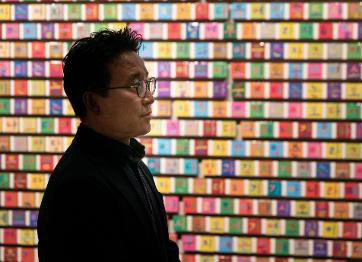
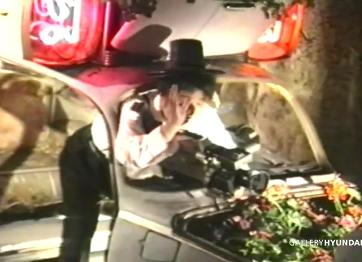

-
News
Kang Seung Lee 이강승 : Solidarity Spores
Kang Seung Lee revisits the 1992 LA riots in "untitled (la recoluciin es la solución!).
-
Essays
Yang Jung Uk 양정욱 : 곤란한 그림
Yang Jung Uk presents his essay Awkward Drawings accompanied by new drawings.
-

Books
Choi Minhwa 최민화 : Once Upon a Time
The newly published exhibition catalogue contains 32 paintings, developed through 20 years of relentless stu
-

News
Kang Seung Lee 이강승 : Queer Correspondence
Los Angeles-based artists Kang Seung Lee and Beatriz Cortez have participated in the second Queer
-

Video
Iván Navarro 이반 나바로 : Homeless Lamp, the Juice Sucker
Iván Navarro’s Homeless Lamp, the Juice Sucker (2004-5) has been featured in The Guggenheim Circular.
-
News
Myoung Ho Lee 이명호 : Among the Trees
Myoung Ho Lee’s Tree series is presented in Among the Trees at Hayward Gallery in London.
-

Press
Ik-Joong Kang 강익중 : Interview with Mark Tetto
Ik-Joong Kang, who captures and records the world on 3-inches canvases, met Mark Tetto from Living Sense
-
Video
Kang-Seung Lee 이강승 : 모어 毛漁
모어 毛漁, an online live performance which was on stream on July 11, is now available on the MMCA YouTube channel.